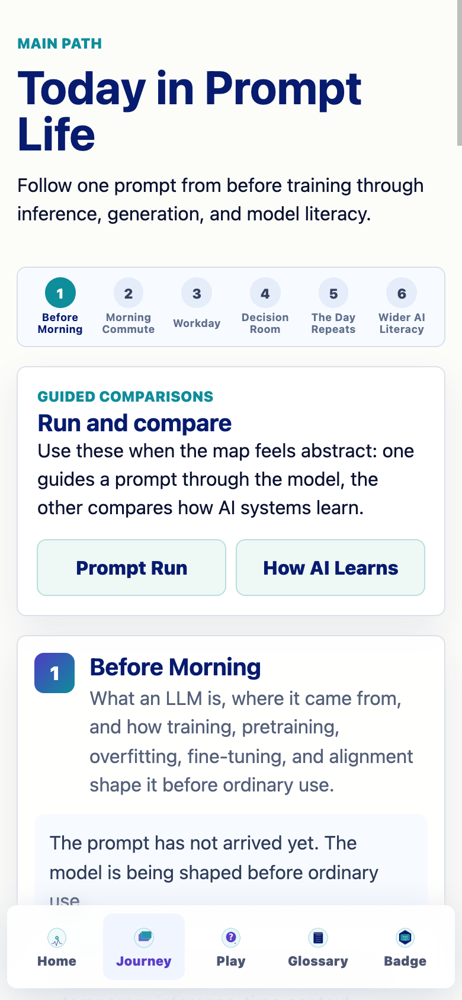
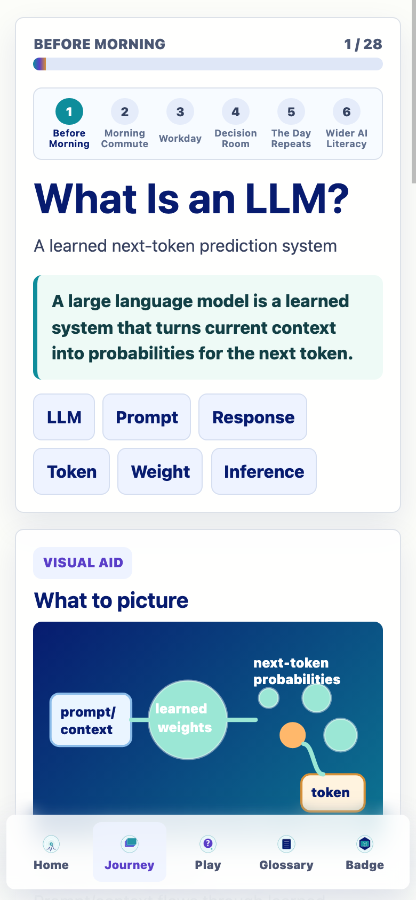
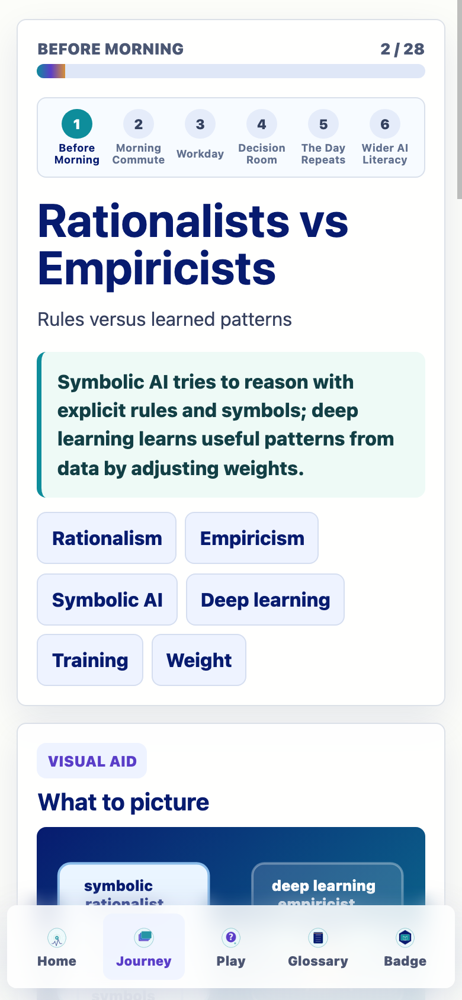
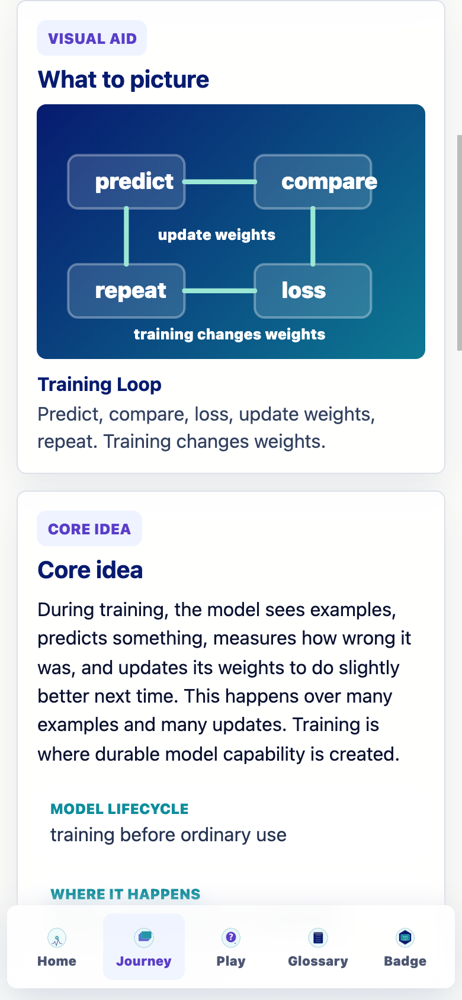
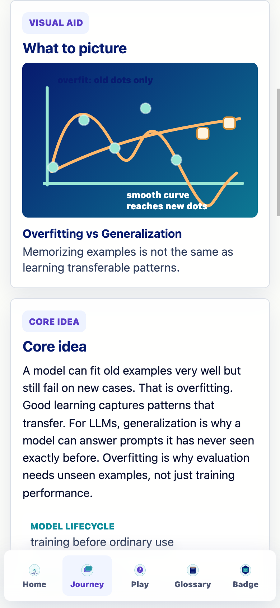
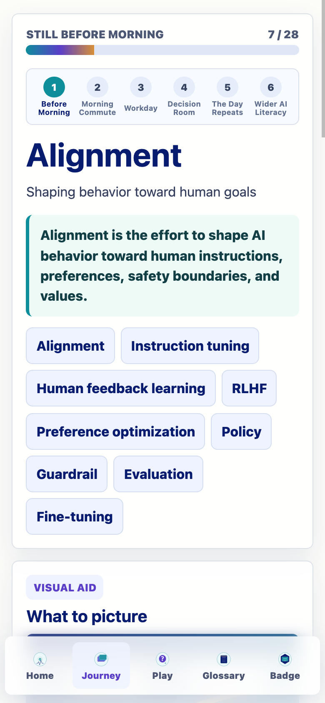
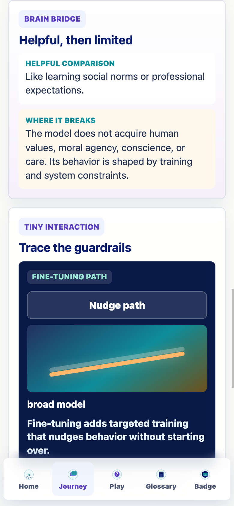
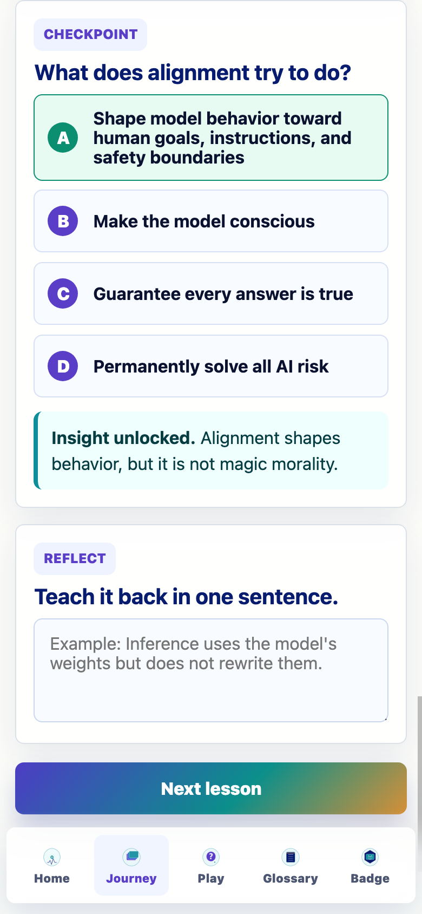
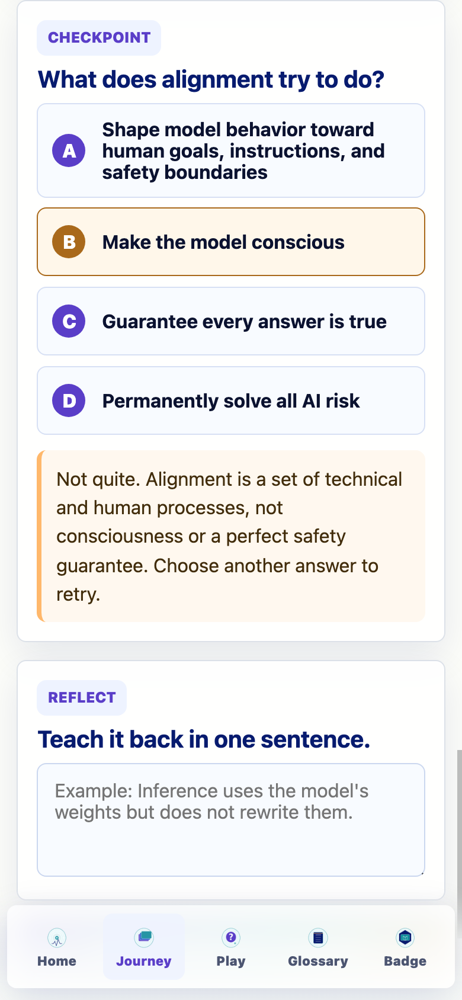
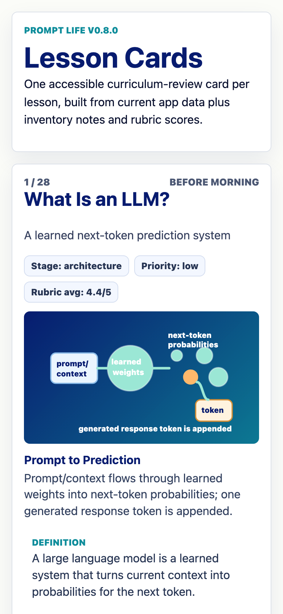

Prompt Life v0.8.0
Batch 1 Foundation Implementation
Implemented the first v0.7 curriculum batch in the actual app: the foundation story from what an LLM is through training, pretraining, overfitting, fine-tuning, and alignment.
7Batch 1 lessons
2new Journey cards
28total lessons
0new games
What Changed
- Rewrote Batch 1 lesson data with lifecycle fields, durable/temporary distinctions, prompt/response notes, misconceptions, and feedback.
- Renamed the existing `history` lesson to Rationalists vs Empiricists while preserving progress compatibility.
- Added Overfitting and Generalization plus Alignment as new Journey lessons.
- Added lightweight React/SVG visual aids for Batch 1 concepts.
- Expanded glossary vocabulary and related-term links for training, overfitting, fine-tuning, and alignment.
- Updated review route, lesson-card export target, and visible app version.
Files Changed
package.jsonsrc/components/VisualAids.tsxsrc/data/content.tssrc/data/contentReview.jssrc/data/exercises.tssrc/main.tsxdocs/REVIEW_NOTES.mddocs/curriculum/BATCH_1_IMPLEMENTATION_REPORT_V0_8.mddocs/curriculum/BATCH_1_REVIEW_MATRIX_V0_8.mddocs/curriculum/SOURCE_NEEDS_V0_8_BATCH_1.mddocs/content-inventory/prompt-life-lesson-cards-v0-8-batch-1.pdfdocs/screenshots/v0-8-batch-1-*.png
Verification
npm install: passed.npm run typecheck: passed.npm run build: passed.npm run export:lesson-cards: passed.- 390px and 320px overflow checks passed for the first seven lessons.
- Reset QA passed in an isolated browser session.
Known Issues
- The `history` id is intentionally preserved even though the visible title changed.
- Batch 1 source review is still needed before publication-final copy.
- Batch 1 uses existing micro-interactions; no new exercise types were added.
Next Steps
- Implement Batch 2: Inference, Prompt vs Response, Tokenization, Token IDs, Embeddings, Vectors, and Tensors.
- Add a source/bibliography pass for Batch 1 claims.
- Add automated route checks for the first seven lessons, review route, glossary drawer, reset, and Badge denominator.
Screenshots









